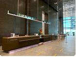
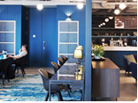

지역별 소개 및 신청


싱가포르 KSC 싱가포르
KSC싱가포르는 2020년 7월 1일부터 국제 금융 허브지구 마리나원 웨스트타워 저스트코에서 한국 스타트업의 동남아 진출을 위한 원스탑 플랫폼 역할을 수행합니다.
입지여건
동남아시아 시장 진출의 교두보
- 개방형 경제
- 거의 모든 공산품에 대한 관세가 철폐되어 시장접근이 더욱 용이
- 주류, 담배, 자동차 및 석유제품 등에 무관세 정책 시행중
- 전체 무역액의 40% 이상이 중개 무역으로 구성됨 -
기업하기 좋은 환경
- ‘아시아 비즈니스 중심지’를 목표로 하는 싱가포르
- 親기업, 유연한 대응 정책으로 글로벌 기업의 싱가포르 유치를 적극 지원하며
- 최대 17% 의 낮은 법인세, 영어 공용화, 신속한 행정절차, 탄탄한 인프라 구축
- 약 7,000여개 MNC의 60% 이상이 아세안(동남아, 아태지역) Regional Office로 싱가포르 선택 -
낮은 문화적 진입장벽
- 다인종·다문화 국가로 중국계, 말레이계, 인도계 및 기타로 구성되며, 언어 역시 영어, 중국어, 말레이어, 타밀어 4개의 언어를 공용어로 지정하여 사용
- 불교, 기독교, 무교, 이슬람교, 도교, 힌두교 및 기타로 구성된 다양한 종교생활 인정
- 전체인구의 약 30% 수준의 외국인 거주하며, 외국문화에 대한 개방도가 높고 문화적 진입장벽이 낮음
- 대부분의 글로벌 기업들은 싱가포르르 동남아시아 진출의 교두보로 싱가포르를 활용 중
진출 유망 사업 분야
- 반도체장비·전자부품
-
- 싱가포르에는 세계적 반도체회사의 제조공장 및 R&D센터가 소재
- 통신장비
(RFID관련 장비 및 부품) -
- RFID 분야는 싱가포르 정부가 정책적으로 육성
- 생명공학 제품
-
- 아시아 최고의 생명공학 연구단지인 바이오폴리스를 중심으로 세계유수의 제약, 생명공학 기업이 활동 중
- 건축자재(보안장비, 엘리베이터부품), 수처리설비, 선박기자재, 정밀기계부품, 한류를 활용한 제품 등
입주면적/주요시설
- 총면적 : 2,360sqft
-
독립형 사무공간 :
- 2인실(약 78 sqft) : 2실
- 4인실(약122sqft) : 6실 -
공유형 사무공간 :
- 지정석 8석 : 4인실(약 122sqft) 2실
- 비지정석 9석 - 회의실 : 저스트코 회의실 사전 예약 및 사용 가능
- 기타 : 휴게공간 커피, tea 무료제공 등
찾아오시는 길
-
택시이용
- 컴포트델그로, 그랩, 고젝 등의 교통수단 이용시 20여분 소요
- 창이공항 택시 승차장에서 Marina One West Tower로 행선지를 밝히고 탑승
- 시간대에 따라 택시비용이 상이하나 대략 S$15~20 사이 비용 청구 -
MRT(지하철) 이용
- 창이공항 터미널에서 공항 철도 탑승
- Tanah Merah 역에서 그린라인(EW Line) 지하철 환승 : 같은 플랫폼 사용으로 즉시 환승 가능
방법 1 : Hall 역에서 레드라인(NS Line)으로 환승. 한층 이동하여 Marina Bay방면 지하철 이용/두정거장 탑승 후 하차하여 도보이동(Marina One West Tower로 이정표를 따라 약 4분 도보)
방법 2 : Bugis 역에서 블루라인(DT Line)으로 환승. 3정거장 이동 후 Downtown역 하차/ Exit C Straits View 방면 도보3분
시설사진
- 건물 전경

마리나원 로비- 저스트코 로비
- 공용 공간
- 회의실

휴게 공간
공유형 사무공간
- 독립형 사무공간
위치
 주소|(S5-057W) 9 Straits View, Marina One West Tower #05-07 Singapore 018937
주소|(S5-057W) 9 Straits View, Marina One West Tower #05-07 Singapore 018937
담당자
- 김상찬 센터장
- 전화: 070-8018-2695
- 이메일: han@kscstockholm.org